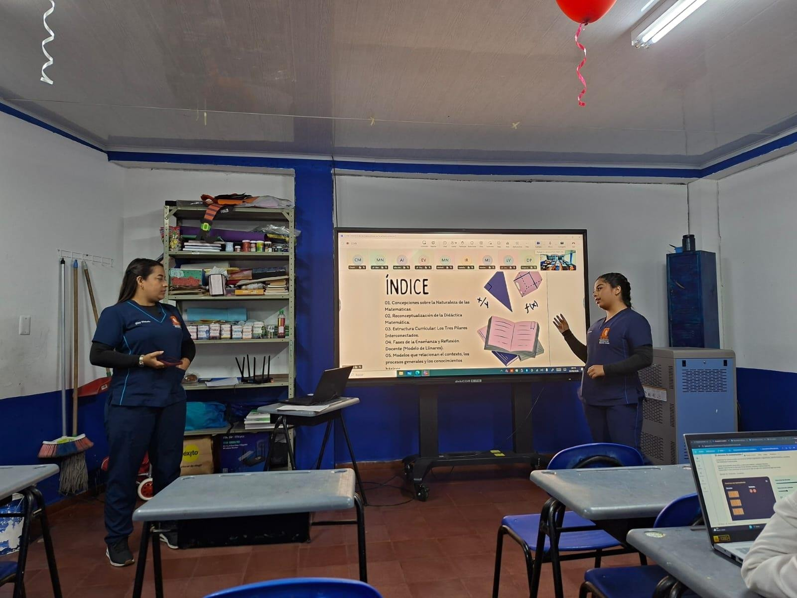

Referentes curriculares
Los referentes curriculares de matemáticas orientan una enseñanza que busca desarrollar el pensamiento y comprender la realidad mediante la resolución de problemas.

Presentado por
- Karol Daiana Gomez Gomez
- Elsy Victoria Martínez
De qué trató
Lo que se explicó
Los referentes curriculares de matemáticas orientan una enseñanza que busca desarrollar el pensamiento y comprender la realidad mediante la resolución de problemas. El archivo destaca que los estudiantes aprenden al explorar, formular preguntas, probar ideas y construir conocimientos con sus compañeros.
Esta exposición explica que el currículo integra tres elementos: los procesos generales, los conocimientos básicos y el contexto. El docente debe relacionarlos con situaciones significativas, planear sus clases, acompañar el aprendizaje y reflexionar sobre los resultados para mejorar su práctica.
- Elemento 01Procesos generales
- Elemento 02Conocimientos básicos
- Elemento 03Contexto
Temas
Lo que se presentó
El índice de la presentación recorre cinco temas.
- Concepciones sobre la naturaleza de las matemáticas
- Reconceptualización de la didáctica matemática
- Estructura curricular: los tres pilares interconectados
- Fases de la enseñanza y reflexión docente (modelo de Llinares)
- Modelos que relacionan el contexto, los procesos generales y los conocimientos básicos
Fotos
Más evidencia de la exposición

Presentación completa
Las 19 diapositivas
Más exposiciones
Volver a todas las exposiciones